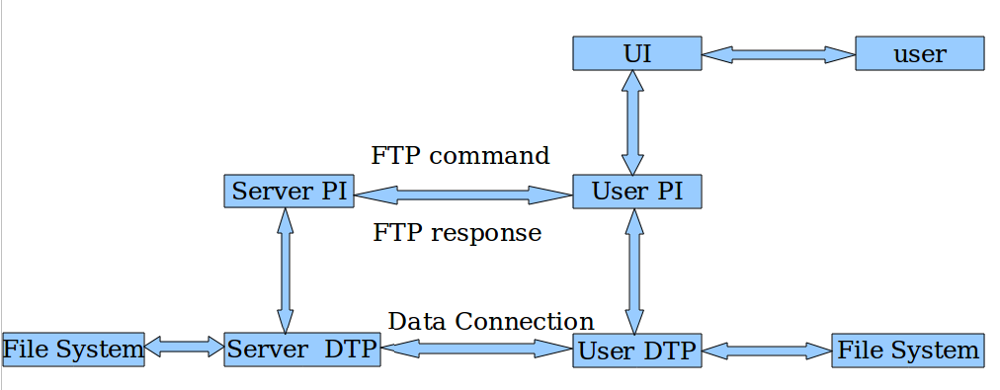

FTP设计
更新－－20121014
说明
颜色标记说明
绿色，重要选择；红色，有问题尚未解决。
所需编写的文档
本次软件开发属于小规模软件开发，故需要编写以下文档：
- 软件需求与开发计划
- 软件设计说明（概要设计及详细设计）
- 使用说明
- 测试分析报告
- 项目开发总结
软件需求与开发计划
目的
练习，加深对网络编程的理解，掌握FTP协议及Telnet协议，熟悉软件开发流程。
一期目标
FTP的最小实现－－用户名：anonymous，口令：任意但不能为空
- 读RFC959（FTP协议）&Telnet
- 写设计文档
- 代码实现
- 测试并改进
- 总结
二期目标
加用户界面，将最小实现图形化
- 学习Linux下GUI编程
- 写设计文档
- 代码实现
- 测试并改进
- 总结
协议解读
Telnet协议
行结束符：两个回车CR加一个换行LF，即\r\n（\r表示回车，\n表示回车换行）
ascii码：\r=13;\n=10;\0=0
单独的一个CR以两个字符表示：CR加NULL即\r\0
IAC（0xff=255）：作为命令来解释，其后的一个字节为命令字节
Telnet命令
- EOF 236 文件结束符
- SUSP 237 挂起当前进程（作业控制）
- ABORT 238 异常中止进程
- EOR 239 记录结束符
- SE 240 子选项结束
- NOP 241 无操作
- DM 242 数据标记DATA MARK（同步信号）
- BRK 243 中断
- IP 244 中断进程
- AO 245 异常中止输出
- AYT 246 对方是否还在运行？
- EC 247 转义字符
- EL 248 删除行
- GA 249 继续进行GOＡＨＥＡＤ
- SB 250 子选项开始
- WILL 251 选项协商
- WONT 252 选项协商
- DO 253 选项协商
- DONT 254 选项协商
- IAC 255 数据字节255
FTP协议
控制连接遵从Telnet协议。FTP在控制连接中使用Telnet协议。可以通过两种方式达到目的：第一种,user-PI或server-PI按Telnet的规则直接在它们的过程中实现;第二种, user-PI或server-PI可以利用系统中已存在的模块实现。这里采用第一种。
- End-of-Line打印行时的分隔符，“回车符”
- EOF(end-of-file)传输的文件的结尾标志
- EOR(end-of-record)传输的记录的结尾标志
这些标志在控制连接上传输，所以不会与文件内容混淆。
路径名是用户为了识别文件输入到文件系统的字符串。路径名通常包含设备和/或目录的名字,和指定的文件名。
FTP 没有指定一个标准的路径名约定。每个用户必须遵从文件系统有关文件传输的文件命名约定。
客户端主动发起控制连接，被动接受数据连接，因此客户端需要在特定端口上监听来自服务端的数据连接。
服务端主动发起数据连接，被动接受控制连接，因此服务端需要在特定端口上监听来自客户端的控制连接。
设计文档
FTP服务模型

- UI－－User Interface
- DTP－－Data Transfer Procedure
- PI－－Protocol Interpreter
- Data Connection－－双向且无需一直存在。
FTP的最小实现的要求
- 类型：ASCII,Non-print
- 模式：Stream
- 结构：File,Record
- 命令：USER,QUIT,PORT,TYPE,MODE,STRU,RETR,STOR,NOOP
- 传输的默认参数：类型ASCII,Non-print，模式Stream，结构File
控制连接用交互式数据流（TCP加PSH标志－用选项设置，But HOW？？？；采用Nagle算法（this is the default）－选项TCP_NODELAY）-------
关于TCP PSH选项的问题－－PSH字段没有相应的编程接口，应该是由tcp协议自动选择加上去的，按书上说的，一般的tcp包都会有这个字段。
如果发紧急数据，可以用 MSG_OOB ，在发送时使用。这个选项是设置URG标记的，有相应的编程接口。
server端：控制连接端口号21，数据连接端口号20。client端：控制连接端口号＝数据连接端口号（默认情况）。
客户端在发送数据请求（上传、下载或获取目录列表）前应在数据端口监听。
命令对大小写不敏感－即要求编程处理大小写问题。
服务器负责维护数据连接——初始化和关闭它。例外的情况是,user-DTP在传输模式下要求关闭连接。在下列情况下服务器必须关闭数据连接
- 服务器在传输模式下完成了数据的发送,要求通过EOF关闭。
- 服务器收到用户发来的ABORT指令。
- 用户使用一个指令改变了端口。
- 控制连接合法关闭或因其他原因关闭。
- 发生了无可挽救的错误。
否则服务器有选择关闭的权利,此时服务器必须对用户进程用250或 226回应指出。
数据连接的重用
- 在使用流式数据传输模型时,文件结束通过关闭连接指示。如果要传送多个文件,由于FTP需要暂时地控制连接记录以保证可靠的传输,此时就会出麻烦。所以连接不能立刻重新开始。解决的方法有两个,一个是确定非默认端口,另一个是使用另一种传输模式。就传输模式而言,因其固有的特点,流传输模式是不可靠的,因此无法确定连接是暂时还是永久关闭。其它传输模式(块模式,压缩模式) 不通过关闭连接指出文件末尾。它们有足够的FTP编码分析数据连接以确定文件的末尾。因此使用这些传输模式可以在保持连接的情况下传送多个文件。
所有数据传输必须以一个文件结束符EOF结束,它可以显式给出, 也可以通过关闭连接隐式给出。对于记录文件,所有记录结束符标记(EOR)是显式的,包括最后一个记录。对于以页结构传送的文件,使用“最后页”表示结束。
没有记录结构的ASCII或EBCDIC的文件,行结束符则用<CRLF>或<NL>分别指示。因为这样的转换对有些系统意味着额外的工作,所以相同的系统在传送非记录结构的文本文件时采用二进制或流表示比较合适。
用户协议解释器负责发送FTP指令和解释收到的回应。
控制连接总是被允许的，登录是为了获取服务器端文件系统（其下某个目录）的访问权限。
FTP指令
蓝色为ftp_v1实现中已编程的
紫色为ftp_v2中待实现的
文本用telnet行结束符（\r\n）来终止。
访问控制指令
- 用户USER
- 口令PASS
- 账户ACCT
- 改变工作路径CWD
- 回到父目录CDUP
- 结构加载SMNT
- 重新初始化REIN
- 退出登录QUIT
传输参数指令
- 数据端口PORT
- 被动PASV
- 表示类型TYPE
- 文件结构STRU
- 传输模式MODE
FTP服务指令
- 获得文件RETR
- 保存STOR
- 唯一保存STOU
- 追加（和新建）APPE
- 分配ALLO
- 重新开始REST
- 重命名RNFR
- 重命名为RNTO
- 放弃ABOR
- 删除DELE
- 删除目录RMD
- 创建目录MKD
- 打印工作目录PWD
- 列表LIST
- 名字列表NLST
- 站点参数SITE
- 系统SYST
- 状态STAT
- 帮助HELP
- 等待NOOP
按功能分组的回应码
- 200指令成功
- 500语法错误，未被承认的指令。包含像指令行太多这样的错误
- 501因参数或变量导致的语法错误
- 202指令未执行，对这个站点来说是不必要的
- 502指令未执行
- 503错误的指令顺序
- 504指令因参数的原因没有执行
- 211系统状态，或系统帮助回应
- 212目录状态
- 213文件状态
- 214帮助消息。如何使用服务器或一个不标准的指令的特殊含义，该回应只对人类用户有用
- 215名字系统类型 该名字是编号分配文档里列出的正式系统名
- 120服务在nnn分钟内准备好
- 220服务为新用户准备好
- 221服务关闭控制连接。适当时退出
- 421服务无效，关闭控制连接。当服务知道必须关机时对任何指令做出的回应
- 125数据连接已经打开，传输开始
- 225数据连接打开，没有传输进行
- 425不能建立数据连接
- 226关闭数据连接。请求的文件操作成功（如，文件传输或文件终止）
- 426连接关闭；传输终止
- 227进入被动模式（h1,h2,h3,h4,p1,p2）
- 230用户登录，继续
- 530没有登录
- 331用户名正确，需要口令
- 332需要登录帐户
- 532需要存储文件的帐户
- 150文件状态正确（关于建立数据连接）
- 250请求的文件操作正确，完成
- 257“路径名”已建立
- 350请求的文件操作需要更多的信息
- 450请求的文件操作没有执行（文件无效，如，文件忙）
- 550请求的操作没有执行（文件无效，如，文件没有找到，没有权限）
- 451请求操作终止，进程发生局部错误
- 551请求操作终止，页类型未知
- 452请求操作没有执行，系统存储空间不足
- 552请求的文件操作终止，超出可分配的存储空间（对当前目录或数据集来说）
- 553请求的操作没有执行（原因未知）
多行回应（非嵌套回应）的格式：
xxx-文本
- 文本
- 文本
- ……
以数字开头的文本
- xxx 文本\r\n
函数设计
ftp_v1
函数设计
client.c
- connect_server()－－与server建立控制连接
- handle_command()－－由switch-case语句组成，根据不同命令选择不同操作
server.c
- listen_client()－－监听来自客户端的连接
- handle_command()－－由switch-case语句组成，根据不同命令选择不同操作
tcp.h
- 函数的各种出错处理
- 字符串常量定义
解决switch case语句中不能处理字符串变量
- 最笨的办法：用if else语句替代，累死。。。
-
可以先将你的字符串定义成枚举型。请看下面的代码：
enum days{Monday,Tuesday,Wednesday,Thursday,Friday,Saturday,Sunday} days cc; cc=Monday; switch(cc) { case Monday: ShowMessage( "Success "); break; ... deafult: ShowMessage( "Fail "); break; } -
但上一个方法仍无法用于本次的代码中，看下面的代码
AnsiString S[]={ "friend ", "family ", "husband ", "wife ", "couple "}; ... CC==string read from your file for(int i=0;i <arraycount;i++) { if(cc=S[i]) { switch(i) { case 0: case 1: ... } } }
这种方法可行。。。
代码实现
client.c
connect_server()
int connect_server(char *arg)
14 {
15 struct sockaddr_in server_addr;
16 int sockfd;
17 //**********************************************************
18 memset(&(server_addr), 0, sizeof(server_addr));
19 server_addr.sin_family = AF_INET;
20 server_addr.sin_port = htons(SERVER_PORT);
21 inet_pton(AF_INET, arg, &server_addr.sin_addr);
22 sockfd = Socket(AF_INET, SOCK_STREAM, 0);
23 Connect(sockfd, (struct sockaddr *)&server_addr, sizeof(server_addr));
24 handle_command(sockfd);
25 return 1;
26 }
handle_command()
void handle_command(int sockfd)
28 {
29 int n, i;
30 char flag[4]; //FTP通信标志
31 char string[][4] = {"220", "331", "230", "221"};
32 char buffer[BUFFER_SIZE];
33 for ( ; ; )
34 {
35 memset(buffer, 0, BUFFER_SIZE);
36 memset(flag, 0, 4);
37 n = Read(sockfd, buffer, BUFFER_SIZE);
38 buffer[n] = '\0'; //设置字符串结尾标志(在buffer[n]处设置！！！)
39 for (i=0; i<3; i++)
40 flag[i] =buffer[i];
41 flag[3] = '\0';
42 fprintf(stdout, "%s\n", buffer);
43 memset(buffer, 0, BUFFER_SIZE);
44 for (i=0; i<4; i++)
45 if (strcmp(flag,string[i]) == 0)
46 {
47 switch (i)
48 {
49 case 0: strcpy(buffer, stringuser);
50 Write(sockfd, buffer, strlen(buffer));//strlen( )不包括结束符'\0'
51 fprintf(stdout, "%s\n", buffer);
52 break;
53 case 1: strcpy(buffer, stringpass);
54 Write(sockfd, buffer, strlen(buffer));
55 fprintf(stdout, "%s\n", buffer);
56 break;
57 case 2: strcpy(buffer, stringquit);
58 Write(sockfd, buffer, strlen(buffer));
59 fprintf(stdout, "%s\n", buffer);
60 //fprintf(stdout,”ftp>”);
61 break;
62 case 3: close(sockfd);
63 break;
64 default:fprintf(stderr,"Unknown error.\n");
65 break;
66 }
67 break;
68 }
69 if (i==3)
70 break;
71 }
72 }
server.c
listen_client()
int listen_client(void)
{
socklen_t sin_size;
int listenfd, connectfd;
struct sockaddr_in server_addr, client_addr;
//************************************************************************
memset(&server_addr, '0', sizeof(server_addr));
server_addr.sin_family = AF_INET;
server_addr.sin_port = htons(SERVER_PORT);
server_addr.sin_addr.s_addr = htonl(INADDR_ANY);
listenfd = Socket(AF_INET, SOCK_STREAM, 0);
Bind(listenfd, (struct sockaddr *)&server_addr, sizeof(server_addr));
Listen(listenfd, BACKLOG);
signal(SIGCHLD, Sig_chld);
//************************************************************************
while(1)
{
printf("Server runs,listening...\n");
sin_size = sizeof(struct sockaddr_in);
//if ((connectfd = accept(listenfd, (struct sockaddr *)&client_addr, &(sizeof(struct sockaddr_in)))) == -1)
//here must use sin_size,because & need an operator with lvalue
if ((connectfd = accept(listenfd, (struct sockaddr *)&client_addr, &sin_size)) == -1)
{
if (errno == EINTR)
continue;
else
{
perror("accept");
exit(1);
}
}
handle_command(connectfd);
}
}
handle_command()
void handle_command(connectfd)
44 {
45 char flag[5];//FTP通信命令标志
46 int i, j, k, n;
47 char buffer[BUFFER_SIZE], *tmpbuf;
48 char string[][5] = {"USER", "PASS", "QUIT"};
49 //***************************************************************
50 snprintf(buffer, BUFFER_SIZE, "%s\t%s", string220, Get_time());
51 Write(connectfd, buffer, strlen(buffer));
52 for ( ; ; )
53 {
54 i = 0;
55 memset(buffer, 0, BUFFER_SIZE);
56 memset(flag, 0, 5);
57 n = Read(connectfd, buffer,BUFFER_SIZE);
58 if (n==0)
59 {
60 fprintf(stdout, "Connection closed by client\n");
61 break;
62 }
63 buffer[n] = '\0';
64 while (buffer[i] != ' '&&buffer[i] != '\0')
65 {
66 flag[i]=buffer[i];
67 i++;
68 }
69 flag[i]='\0';
70 fprintf(stdout, "%s\n", flag);
71 for (k=0; k<3; k++)
72 if (strcmp(flag,string[k]) == 0)
73 {
74 switch (k)
75 {
76 case 0: tmpbuf = calloc(sizeof(char), n-i);
77 for(j=0,i=i+1;i<n;i++,j++)
78 tmpbuf[j]=buffer[i];
79 tmpbuf[j]='\0';
80 if (strcmp(tmpbuf, user) == 0)
81 strcpy(buffer, string331);
82 Write(connectfd, buffer, strlen(buffer));
83 break;
84 case 1: tmpbuf = calloc(sizeof(char), n-i);
85 for(j=0,i=i+1;i<n;i++,j++)
86 tmpbuf[j]=buffer[i];
87 tmpbuf[j]='\0';
88 if (tmpbuf != NULL)
89 strcpy(buffer, string230);
90 Write(connectfd, buffer, strlen(buffer));
91 break;
92 case 2: strcpy(buffer, string221);
93 Write(connectfd, buffer, strlen(buffer));
94 break;
95 default:break;
96 }
97 break;
98 }
99 }
100 close(connectfd);
101 }
tcp.h
//字符串常量定义 //sent by server char string220[]="220 Welcome to xxx!"; char string331[]="331 Guest login ok, send your complete e-mail address as password."; char string230[]="230 Guest login ok, access restrictions apply. Welcome to xxx!"; char string221[]="221 Goodbye."; //****************************** //sent by client char stringuser[]="USER anonymous"; char stringpass[]="PASS 417951642@qq.com"; char stringquit[]="QUIT";
客户端与服务端的交互过程
client
- 主动建立控制连接
- 收到220 发USER
- 收到331 发PASS
- 收到230 发QUIT
- 收到221 close(sockfd)
server
- 被动接受控制连接 发220
- 收到USER 发331
- 收到PASS 发230
- 收到QUIT 发221
this is version_1.0（ftp_v1）：客户端与服务端建立了控制连接，登录后即退出，没有实现其他功能。
ftp_v2
- 命令对大小写不敏感（到底在客户端实现还是在服务端实现？）－－都转换为大写再进行判断。在服务端实现命令对大小写不敏感。函数：toupper()小写转大写；tolower()大写转小写；toascii()整型转ascii字符
- 口令不显示或改为*****
- 怎么改变提示符为ftp>（关于环境变量PS2。。。）：暂时不管，用了最直接的方法：fprintf(stdout, “ftp>”);
- 把USER和PASS出改为要用户输入
- 客户端与服务端建立数据连接，客户端用命令查看服务端目录列表。
- 修正各字符串的结束符，使之符合协议规定。
怎么改变提示符为ftp>（关于环境变量PS2。。。） http://fbirdzp.blogbus.com/logs/37423250.html http://www.sharecenter.net/thread-92763-1-1.html getenv(取得环境变量内容) putenv(改变或增加环境变量) setenv(改变或增加环境变量) unsetenv(清除环境变量内容) http://www.examw.com/Oracle/zhonghe/96910/ http://linux.chinaunix.net/begin/2004-10-05/28.shtml#_Toc41417037
把USER和PASS出改为要用户输入
- ftp>USER anonymous anonymous为用户输入
- ftp>PASS xxx@qq.com xxx@qq.com为用户输入
客户端：一路case，最后监听数据连接－－listen,accept。客户端先监听，后发送命令（上传、下载或获取目录列表）
服务端：一路case，最后建立数据连接（服务端在与客户端建立控制连接后，可以通过函数（参考《UNIX网络编程》page107 getpeername()）获取客户的ip地址和端口号（即客户身份），然后利用此端口号与客户端建立数据连接，this is the PORT mode）。
正常情况下，由服务器主动关闭数据连接。
User-PI有权力初始化非缺省端口
- PORT－－指定一个非缺省用户端数据连接端口。
- PASV要求服务器端指定一个非缺省服务端口。
套接口选项（参考《UNIX网络编程》第七章page168）
from http://wenku.baidu.com/view/21eb76d380eb6294dd886cfc.html 应答包括三个数字和一些信息
-
第一个数字表示5种类型应答
- 为1，一个肯定初步应答
- 为2，请求成功
- 为3，请求成功，但缺乏额外的信息，如密码等
- 为4，请求失败，可以继续发请求
- 为5，失败，不能再接收请求
- 第二个数字包含了应答的附加信息
- 第三个数字更加详细地说明应答
在进行数据文件的传输时，必须建立一个新的Socket，将Bind到一个新的服务端口，并通过PORT指令告诉server端，然后通过这个数据服务端口收发数据。
对于PORT命令：用snprintf进行格式转换，把信息转换为合适的格式后再通过控制连接发送给服务端口。
http://www.ncftp.com/libncftp/ 这是一个ftp函数库。可以在windows和unix下编译使用。
http://topic.csdn.net/t/20041229/17/3686251.html http://bbs.chinaunix.net/viewthread.php?tid=860935&extra=page%3D2 http://bbs.chinaunix.net/viewthread.php?tid=892147&extra=page%3D2 http://www.gnu.org/directory/WebFTP.html http://www.longen.com/protocol.htms
自己编程（只写客户端的话。。。）用PASV模式最好。
RFC 959 是FTP Protocol
RFC 1579是"Firewall-Friendly FTP"
PASV模式：client端主动连接，server端被动连接
PORT模式：client端被动连接，server端主动连接
我给你一个简单思路：
如果是PASV模式，（现在好像基本上都支持） 那么，
- 在控制连接，发送PASV到server端；
- 在控制连接接收server发回的地址和端口；
- 从client端新建一个socket，connect 到Server端（按照b步骤得到的地址和端口）；这样就得到了Data connection。
- 在控制连接上，发送ftp命令，；例如get, put。
- 然后在data connection上，发送(如果在控制连接上发送put)或者接收（发送get）。
客户端与服务端建立数据连接，客户端用命令查看服务端目录列表
看协议的具体规定（Telnet）
PSAV和PORT模式，由客户端程序选择二者之一，用户并不参与。。。
PORT模式：
- 在控制连接，发送PORT到server端；
- 然后在对应端口监听，等待服务端来建立数据连接；
FTP的两种模式：PORT模式（主动）－－更安全（对服务器而言）；PASV模式（被动）
在客户端登录成功后，应该有标志（如login）表明其成功登录（在客户端还是在服务端设置标志？）－－暂时把标志设在客户端。
客户端与服务端的交互过程
client
- 主动建立控制连接
- 收到220 发USER
- 收到331 发PASS
- 收到230 改变提示符为ftp>，监听数据连接listen_server()，发PWD（打印工作目录）；数据连接上收工作目录并依然监听，发LIST（列表显示目录下文件）；在终端显示，控制连接上
- 收到200（指令成功）
- 收到200 发QUIT
- 收到221 close(sockfd)
server
- 被动接受控制连接 发220
- 收到USER 发331
- 收到PASS 发230
- 收到PWD 建立数据连接connect_client()，发工作目录（下载目录）；控制连接上发200，服务端发送结束则关闭数据连接
- 收到LIST 依然建立，发送客户端当前所在目录下的文件列表；控制连接上发200，服务端发送结束则关闭数据连接
- 收到QUIT 发221